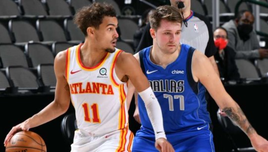

16/09/21 NBA
¿Quiénes son los mejores anotadores en el clutch en las últimas 5 temporadas? Datos y curiosidades
Después de repasar los datos colectivos, toca meternos en lo que arrojan los datos individuales en las instancias decisivas de los partidos. ¿Qué jugador anotó más puntos en estos momentos? Los detalles de un Top 10 con varias sorpresas.
Por Leandro Fernández @FernandezLeaVer lo que pasa en los minutos clutch de un partido NBA es una de las cuestiones más interesantes alrededor de los múltiples ángulos de análisis que hay. Claro, hablamos de los últimos 5 minutos de un encuentro que tiene una diferencia de 5 o menos puntos. Es decir, el tramo decisivo de un choque cerrado, ideal para cualquier fan. Hace unos días indagamos en cuestiones colectivas, viendo qué equipos tuvieron mayor o menor éxito en el clutch en las últimas cinco temporadas. Y ahora es el turno de meternos en el plano individual.
Mas| Datos y curiosidades del rendimiento de los equipos NBA en el clutch en los últimos 5 años
¿Quiénes han sido los jugadores más destacados en el clutch en las últimas cinco campañas? Veamos...
Los líderes anotadores en el clutch

| Jugador | Puntos | Jugador | Puntos | Jugador | Puntos |
|---|---|---|---|---|---|
| Russell Westbrook | 747 | LeBron James | 569 | Devin Booker | 475 |
| Damian Lillard | 721 | Kyrie Irving | 567 | Paul George | 460 |
| DeMar DeRozan | 692 | Kemba Walker | 558 | CJ McCollum | 457 |
| James Harden | 650 | Jimmy Butler | 530 | Anthony Davis | 450 |
| Bradley Beal | 635 | Nikola Jokic | 497 | Joel Embiid | 443 |
En una lista en donde los primeros 15 son casi en su totalidad jugadores que pasaron por el All-Star (CJ McCollum es el único que rompe esa regla), Russell Westbrook es el líder a la hora de puntos totales en el clutch. En una primera lectura se puede sumar a su favor el hecho de haberse destacado incluso en las dos últimas temporadas, donde tuvo que compartir balón con dos figuras de peso (primero con Harden en Houston y luego con Beal en Washington).
A la hora de los porcentajes, el base se encuentra en el clutch apenas por debajo de sus medias generales en este lapso de tiempo, acumulando un 43,5% de campo y 26% triples (44,1% y 30,8% en la media global). Aunque claro, el gran punto que impulsa su liderazgo llega en aquella histórica 2016-2017, donde logró el MVP: allí totalizó 247 unidades en el clutch, con diferencia la mejor marca de toda la liga, y lo hizo con una eficiencia superior a la habitual para su caso (44,6% de campo y 32,8% triples).
En el segundo lugar se encuentra un nombre que sale de manera automática a la hora de hablar del clutch, Damian Lillard. El base de los Trail Blazers fue el mejor en la 2020-2021 con 162 puntos totales, con una eficiencia altísima (51,1% campo, 39,1% triples), muy superior a sus promedios de estos cinco años en estas situaciones (41% campo, 33% triples). De hecho, Dame es el líder absoluto de los últimos tres cursos, con un acumulado de 406 unidades.
Hay dos nombres muy interesantes en el Top 10: DeMar DeRozan en el tercer lugar, una ratificación a su temple y personalidad muchas veces infravalorada, y Kemba Walker en el 8° puesto. Es cierto que sus dos últimos años en los Celtics no lo tuvieron entre los destacados, pero las tres campañas previas como líder de los Hornets fueron muy buenas (al menos individualmente), promediando 157,6 puntos en cada una de ellas.
Los destacados en eficiencia

16 jugadores tomaron más de 300 intentos de campo en el clutch en las últimas cinco temporadas . ¿Quién ha sido el más eficiente de todos ellos? Curiosamente, el único que no pisó el All-Star Game del grupo de los 15 líderes en anotación: CJ McCollum. El escolta de Portland registró un 48% de campo, con un genial 41,9% en triples. Para destacar.
¿Quiénes son los 5 más eficientes entre los que tomaron al menos 300 lanzamientos de campo?
- CJ McCollum: 48% campo en 344 intentos
- LeBron James: 47,8% campo en 408 intentos
- Nikola Jokic: 47,8% campo en 364 intentos
- DeMar DeRozan: 46,4% campo en 517 intentos
- Kyrie Irving: 45% campo en 413 intentos
Datos y curiosidades
- Kemba Walker es el líder en triples anotados, con un total de 72. ¿Quiénes lo siguen? Damian Lillard con 71, LeBron James con 57, Stephen Curry con 56 y James Harden con 55.
- Entre estos cinco, el de Golden State Warriors registra, con diferencia, el mejor porcentaje de acierto con 42,1%. Los otros cuatro están todos por debajo del 33,3%.
- ¿Dónde aparece Giannis Antetokounmpo? En el 16º lugar de anotación total, con 413 (54,7% campo).
- ¿Y Chris Paul? Muchos lo verán como uno de los mejores en este lustro, pero recién aparece en el 17° puesto con 406 tantos totales. Claro, sus dos años en Houston al lado de Harden fueron un lastre en esta cuenta (85 puntos acumulados), o al menos un contraste enorme con lo mostrado en los dos últimos cursos, donde acumuló 270.
- ¿Qué pasó si tomamos como referencia las últimas tres temporadas? La pregunta sale porque ese es el tiempo que llevan en la liga dos de los mejores talentos jóvenes actuales como Luka Doncic y Trae Young. Y también sale porque uno de ellos irrumpe en el Top 10. ¿Quién? El de Atlanta Hawks, quien se encuentra 6º en los últimos tres cursos, con 345 puntos anotados en el clutch. ¿Su eficiencia? 41,2% campo y 32,4% triples.
- Trae es el quinto con más triples totales en estos tres años (34), sólo por detrás de Lillard (44), Walker (38), LaVine (37) y Curry (36). Steph, una vez más, es el único que supera el 40% de acierto (43,4%), no sólo entre los cinco que más metieron sino en todo el Top 15.
- ¿Y Luka? Aparece en el 15° lugar de los últimos tres años, con 288 puntos totales, aunque con un bajo 24% en triples, que representaron casi el 44% de sus intentos.
- Nikola Jokic salta al tercer lugar de puntos totales en el clutch en los últimos tres cursos, con 374 (y al borde del 50% de campo).